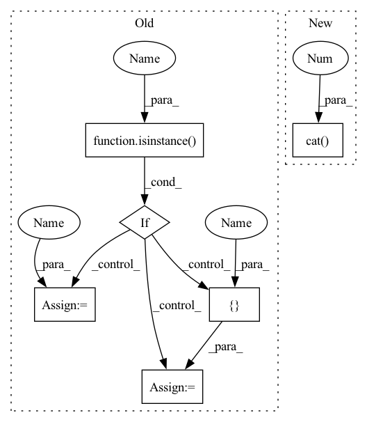

Pattern ID :28916
Before Change
return cp.checkpoint(closure, *inputs)
def forward(self, inputs: Tensor):
if isinstance(inputs , Tensor) :
prev_features = [inputs ]
else:
prev_features = inputs
if self.memory_efficient and self.any_requires_grad(prev_features):
if torch.jit.is_scripting():
raise Exception("memory efficient not supported in JIT")After Change
def forward(self, inputs: Tensor):
concat_features = torch.cat( inputs, 1 )
bottleneck_output = self.conv1(self.relu1(self.norm1(concat_features)))
new_features = self.conv2(self.relu2(self.norm2(bottleneck_output)))
if self.drop_rate > 0:In pattern: SUPERPATTERN
Frequency: 4
Non-data size: 6
Instances Fragment ID: 84961234
Project Name: arwin-yu/deep-learning-classification-models-based-cnn-or-attention
Commit Name: 496072fdc3f86ed8547b9f3fa3f7af899905dbed
Time: 2023-02-25
Author: 102544244+Arwin-Yu@users.noreply.github.com
File Name: classic_models/densenet.py
M Class Name: _DenseLayer
N Class Name: _DenseLayer
M Method Name: forward(2)
N Method Name: forward(2)
M Parent Class: nn.Module
N Parent Class: nn.Module
M File Name: classic_models/densenet.py
N File Name: classic_models/densenet.py
M Start Line: 45
M End Line: 58
N Start Line: 24
N End Line: 25
Before Change
return cp.checkpoint(closure, *inputs)
def forward(self, inputs: Tensor):
if isinstance( inputs, Tensor) :
prev_features = [ inputs = inputs
if self.memory_efficient and self.any_requires_grad(prev_features):
if torch.jit.is_scripting():After Change
def forward(self, inputs: Tensor):
concat_features = torch.cat( inputs, 1 )
bottleneck_output = self.conv1(self.relu1(self.norm1(concat_features)))
new_features = self.conv2(self.relu2(self.norm2(bottleneck_output)))
if self.drop_rate > 0: Fragment ID: 84961235
Project Name: arwin-yu/deep-learning-image-classification-models-based-cnn-or-attention
Commit Name: 496072fdc3f86ed8547b9f3fa3f7af899905dbed
Time: 2023-02-25
Author: 102544244+Arwin-Yu@users.noreply.github.com
File Name: classic_models/densenet.py
M Class Name: _DenseLayer
N Class Name: _DenseLayer
M Method Name: forward(2)
N Method Name: forward(2)
M Parent Class: nn.Module
N Parent Class: nn.Module
M File Name: classic_models/densenet.py
N File Name: classic_models/densenet.py
M Start Line: 45
M End Line: 58
N Start Line: 24
N End Line: 25
Before Change
// torchscript does not yet support *args, so we overload method
// allowing it to take either a List[Tensor] or single Tensor
def forward(self, input: Tensor) -> Tensor: // type: ignore[no-redef] // noqa: F811
if isinstance( input, Tensor) :
prev_features = [ input = input
if self.memory_efficient and self.any_requires_grad(prev_features):
if torch.jit.is_scripting():After Change
new_features = F.dropout(new_features,
p=self.drop_rate,
training=self.training)
return torch.cat( [x, new_features], 1 )
class _DenseBlock(nn.Sequential):
Fragment ID: 84961236
Project Name: mlcommons/gandlf
Commit Name: 99643a919f47a8878ce22d99c5669869709d44c7
Time: 2021-03-08
Author: sarthak.pati@hotmail.com
File Name: GANDLF/models/densenet.py
M Class Name: _DenseLayer
N Class Name: _DenseLayer
M Method Name: forward(2)
N Method Name: forward(2)
M Parent Class: nn.Sequential
N Parent Class: nn.Module
M File Name: GANDLF/models/densenet.py
N File Name: GANDLF/models/densenet.py
M Start Line: 79
M End Line: 97
N Start Line: 38
N End Line: 44